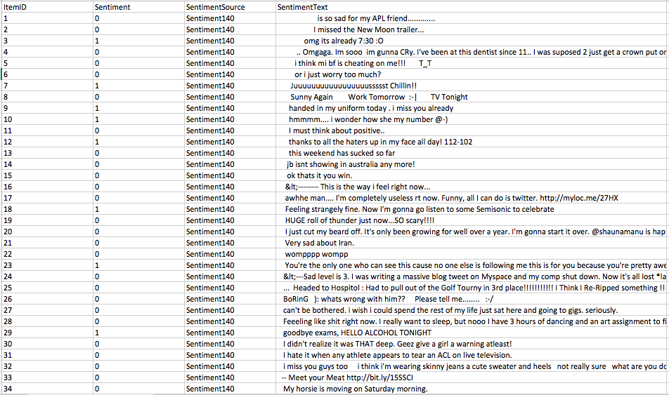

Twitter Sentiment Analysis
Introduction
In this project, we try to analyze the sentiment behind the tweets. By training the model with huge dataset obtained from sentiment 140, we try to identify whether a tweet is positive or negative. This project has many applications in real world. If a company posts an update about their new idea on their product, it is important to know whether people would like it or not. By analyzing the comments section of the post, some insight can be drawn whether the update was liked by many people or not.
Motivation
We found this project interesting because not only big industries want to know what people think about them and their products, but also every individual to some extent would be curious to know what do people feel about their post.
Dataset
We obtained the data from sentiment 140.
Sentiment 140 has provided with 1578627 tweets. The size of the file is about 150MB. The tweets have been classified into two classes. Class ‘0’ indicates negative tweets and Class ‘1’ indicates positive tweets.
Below is a snippet of our dataset
Algorithms
We implemented this project in two different ways. We used Naïve Bayes algorithm in first part and KNN algorithm in second part. In the first part, we implemented TFIDF and Naive Bayes algorithms and in the second part we implemented TFIDF and KNN algorithms. In summary below are the algorithms we implemented in our project.
TFIDF
Instead of using raw frequencies of words, implementing naïve bayes and KNN algorithms using TFIFD scores would significantly improves the performance. So we calculate the TFIDF scores of each word in every tweet.
Naive Bayes
Given a hypothesis H and evidence E, Bayes’ theorem states that the relationship between the probability of the hypothesis P(H) before getting the evidence and the probability P(H | E) of the hypothesis after getting the evidence is P (H | E) = (P ( E | H) * P (H) ) / P(E)
KNN
K-nearest neighbors, is an algorithm used in classification and regression. We are using KNN for classification in our project. Given the input, we find 9 tweets which are highly relevant to our given input. We find the class to which most of the 9 tweets belong to. We assign that class to our given input.
Challenges
Implementation
Pre-processing
We used tokenizer to identify words in a given tweet. Some common words like is, the, etc do not provide critical information and take up space. In order to avoid this we removed these kind of words before imlplementing any algorithms. We also removed redundant information associated with any word. For example in the words like Hadoop123, we removed the digits 123 in it.
TFIDF
The TFIDF scores are calculated as follows
• TFIDF(word, tweet) = wordFrequency(word, tweet) * IDF(word)
• wordFrequency(word,tweet) = 1 + log 10( number of occurrences of the word in tweet)
• IDF(word) = log 10 (Total number of tweets /number of tweets containing the word)
• sometimes if a tweet is too big then the words in it can have higher TFIDF scores. It does not mean that the tweet is highly important. In order to avoid this situation we normalized all the TFIDF scores.
Naive Bayes
Given a certain text input we try to identify which class the text belongs to. Below is the brief explanation of the implementation.
Suppose we give x as text input. Let x1, x2 … xd be the words in the input. The probability of the input occurring given a certain class has occurred is
P(x∣cj)=P(x1∣cj)⋅P(x2∣cj)⋅…⋅P(xd∣cj)
We calculate the probabilities for each class by using the above formula. After that we multiply it with the probability of occurrence of the class.
Now we assign the class to the input which has got the highest value i.e, Cnb = argmax P(cj)⋅P(x1∣cj)⋅P(x2∣cj)⋅…⋅P(xd∣cj) where ‘J’ ranges from 0 to 1.
We can calculate P(xk∣cj) as follows, P(xk∣cj) = Nck + 1 / Nc + N
where
• Nck is sum of TFIDF of the word K occurred in all tweets of class ‘C’
• Nc is sum of TFIDF of words in all tweets of class ‘C’
• N is sum of TFIDF of all words in all tweets
KNN
Given the input, we find the tweets which contain alteast one of the words present in our input. Now we calculate the TFIDF scores of each tweet. We can do that by summing all the TFIDF scores of each word in the tweet which are present in the input. Now we calculate the cosine similarity between the given input and all the tweets. We then find 9 most similar tweets with the help of cosine similarity. Now the majority of the tweets which are of same calls are considered. That class is assigned to our input.
Results
Our team and contributions
Gowtham Kommineni
Mounica Jagga
Amruth Sai Gandavarapu
References
[1] Rennie, Jason D., Lawrence Shih, Jaime Teevan, and David R. Karger. "Tackling the poor assumptions of naive bayes text classifiers." In Proceedings of the 20th International Conference on Machine Learning (ICML-03), pp. 616-623. 2003.
[2] Kibriya, Ashraf M., Eibe Frank, Bernhard Pfahringer, and Geoffrey Holmes. "Multinomial Naive Bayes for Text Categorization Revisited." In Australian Conference on Artificial Intelligence, vol. 3339, pp. 488-499. 2004.
[3] Zhang, Hao, Alexander C. Berg, Michael Maire, and Jitendra Malik. "SVM-KNN: Discriminative nearest neighbor classification for visual category recognition." In Computer Vision and Pattern Recognition, 2006 IEEE Computer Society Conference on, vol. 2, pp. 2126-2136. IEEE, 2006.
[4] Zhang, Min-Ling, and Zhi-Hua Zhou. "ML-KNN: A lazy learning approach to multi-label learning." Pattern recognition 40, no. 7 (2007): 2038-2048.